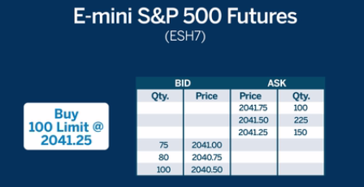
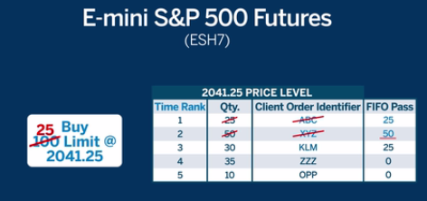
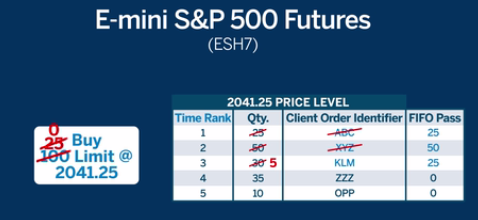
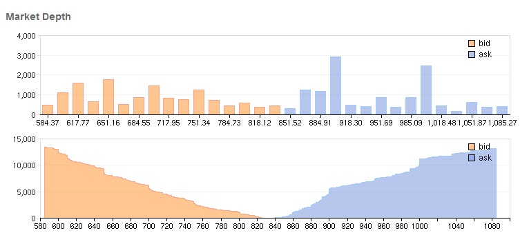

引擎细节(一)
此篇包含交易引擎一个最最核心模块设计规范（参考CMEGroup），不会涉及到具体逻辑，引擎细节(二) 部分会涉猎更详细模块设计的细节。
主要涉及订单的
- 管理
- 匹配
A matching algorithm is logic that determines the allocation of matching orders and is designed to ensure each market participant is given the best possible execution at the fairest price
匹配系统¶
也可以叫撮合系统(order matching)。
根据不同的匹配算法，撮合成交订单， 最简单的匹配的逻辑其实很容易理解， 买卖单子按照价格分别排两个列表， 买价（BID）从高到底（买价越高越容易成交），卖价（ASK）的从低到高（卖价越低越容易成交）。 然后入砌俄罗斯方块，买价格大于等于卖价格，这两个单子就匹配好了。
比如市场现行情如下， S&P500， 最高买价（BID）, 2041.00； 最低卖价（ASK）2041.25， 点差0.25（记得，还有上文说的做市商）， 如下你现在下个 在2041.25 买 100 的委单。
刚好有卖价在2041.25的单子150个，当然这150个有好几个人下的， 从上到下，依次成交，直到最终100个单子全部被匹配掉，还剩下面的50个。
 匹配系统， 其实只干了这一件事情； 同时匹配系统需要把价格广播出去。
在我们这里， 价格没有因为此单影响， 最终还是， 2041.00 / 2041.25; 如果用户买了200个， 那么价格就会调整到: 2041.00 / 2041.50;
这个时候可能更多人买， BID 价格会继续往上涨。 或者流动性供应商注入更多的BID 单子， 最终点差稳定一定范围内， 而价格根据买卖双反的博弈，往上或者下移动， 大家可以参考市场深度图， 可以看到买卖双方那方更强。 如下面的市场深度图可以看出那方更强：
匹配算法¶
上面的匹配算法，是最最简单的 FIFO 匹配算法， 显示中有其他几种非常复杂的算法， 这里列出来可能仅做介绍， 不做复杂衍生，Arkenstone(开源），不保证全部实现。
| 类型 | 描述 | 支持 |
|---|---|---|
| FIFO | FIFO | Y |
| FIFO with LMM | FIFO with LMM | Y |
| Allocation | NA | N |
| FIFO with Top Order and LMM | NA | N |
| Pro-Rata | NA | N |
| Configurable | NA. | N |
| Threshold Pro-Rata | NA | N |
| Threshold Pro-Rata with LMM | NA | N |
FIFO¶
FIFO (First In, First Out) 是最简单的匹配算法， 按照单子的价格，和进入的时间进行按顺序匹配。
FIFO 例子1:
1. Orders in the below table are at the same price on the buy side.
2. Earliest timestamp is Order 1, then order 2, etc.
3. The sell aggressor is at the same price as the buy orders.
4. The sell aggressor is a 50 lot.
The aggressing quantity is allocated to orders 1 + 2 (filling them). Order 3 receives a partial fill and will have 21 lots remaining after the match. The other orders receive no fill quantity.
| 订单号 | 数量 | 剩余 | 消耗 |
|---|---|---|---|
| 1 | 5 | 0 | 5 |
| 2 | 9 | 0 | 9 |
| 3 | 57 | 21 | 36 |
| 4 | 4 | 4 | 0 |
| 5 | 28 | 28 | 0 |
| 6 | 300 | 300 | 0 |
FIFO with LMM¶
LMM: lead market marker
FIFO with LMM 是一个加强的FIFO 算法， 允许LMM在FIFO 前预先满足， 同时也要遵循FIFO 规： 价格+时间：
LMM 是和平台有协议的做市商， 为特定的产品提供流动性，流动性供应商, 详情参考 market maker 文档
- If the LMM has a single order at an elected price level it will match N% of the remaining incoming order quantity, with N equal to the LMM’s allocation percentage. However, the matched quantity will not exceed the LMM’s order quantity.
- If the LMM has multiple orders at an elected price level, then the LMM quantity is aggregated and will match N% of the remaining incoming order quantity. Multiple LMM orders are matched on Time Priority basis until N% quantity allocation is fulfilled.
- All remaining resting orders at an elected price level (including LMM orders) are matched according to FIFO rules.
Pro-Rata¶
Defination:
Pro rata is a Latin term used to describe a proportionate allocation.
It essentially translates to "in proportion," which means a process
where whatever is being allocated will be distributed in equal portions.
等比例均分在AK 遵循原则：
- 比例分， 最小限额下
- 剩下的FIFO 分(考虑取余， 删除不符合最小限额的)
例子(Pro Rata with TOP)
简单的没有列， 这个是WITH TOP 的实现
Pro Rata with TOP
- 第一个全分配
- 剩下的遵循 pro rate 规则
| 卖价 | 数量 | 单号 |
|---|---|---|
| 9711 | 200 | 1(Top) |
| 9711 | 25 | 2 |
| 9711 | 50 | 3 |
| 9711 | 10 | 4 |
现在 有一个 BID 250 @9711 进入BOOK
第一单， 200 被预分配， 剩下的 50 在下面三个单子 （25+50+10）= 85 中分配：
- 25/85 x 50 = 14
- 50/85 x 50 = 29
- 10/85 x 50 = 5
分配掉 29+14+5 = 48 还剩下 2 -lot 按照 FIFO 分配， 完全非配个 第二个单子， 最终分配：
| 卖价 | 数量 | 单号 | 分配 |
|---|---|---|---|
| 9711 | 200 | 1(Top) | 200 |
| 9711 | 25 | 2 | 14+2 = 16 |
| 9711 | 50 | 3 | 29 |
| 9711 | 10 | 4 | 5 |
其他算法不在这里枚举， Arkenstone 中实现的基本是标准的 FIFO
下单¶
负责接收你买卖指令的地方， 在发送到匹配引擎前， 需要做风险检查， 比如资金充沛与否，是否在黑名单， 账号是否被锁定等等。
风控¶
风险的监控和管理，在开市的时间， 特别当海量的单子涌入系统， 用户的持仓，现金，占用保证金，浮动盈亏等都在不停的变化，对风险的实时监控是个非常大的挑战。
价格是否超过阉值？ Price Banding 权衡和设计。
设计原则¶
根据 单一职责原则(SRP：Single responsibility principle) 可以看到， 核心交易引擎之匹配引擎, 功能非常简练：
- 接收订单输入、撤销(批量)
- 输出报价
- 输出匹配
- 配置接口